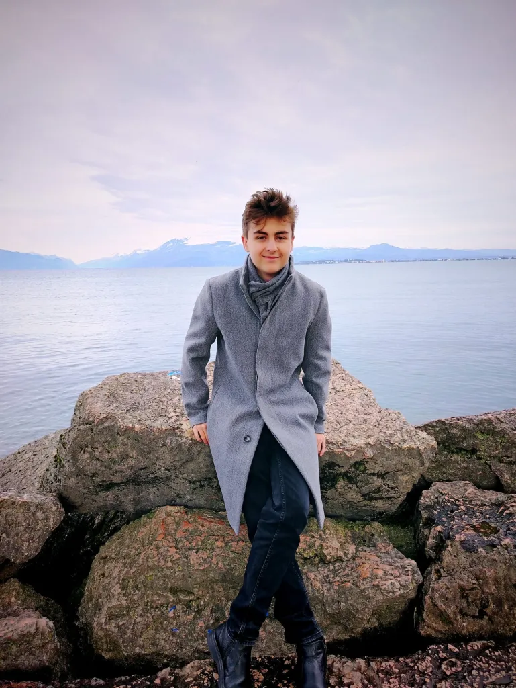
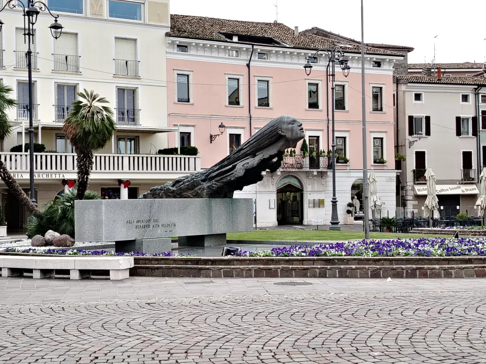
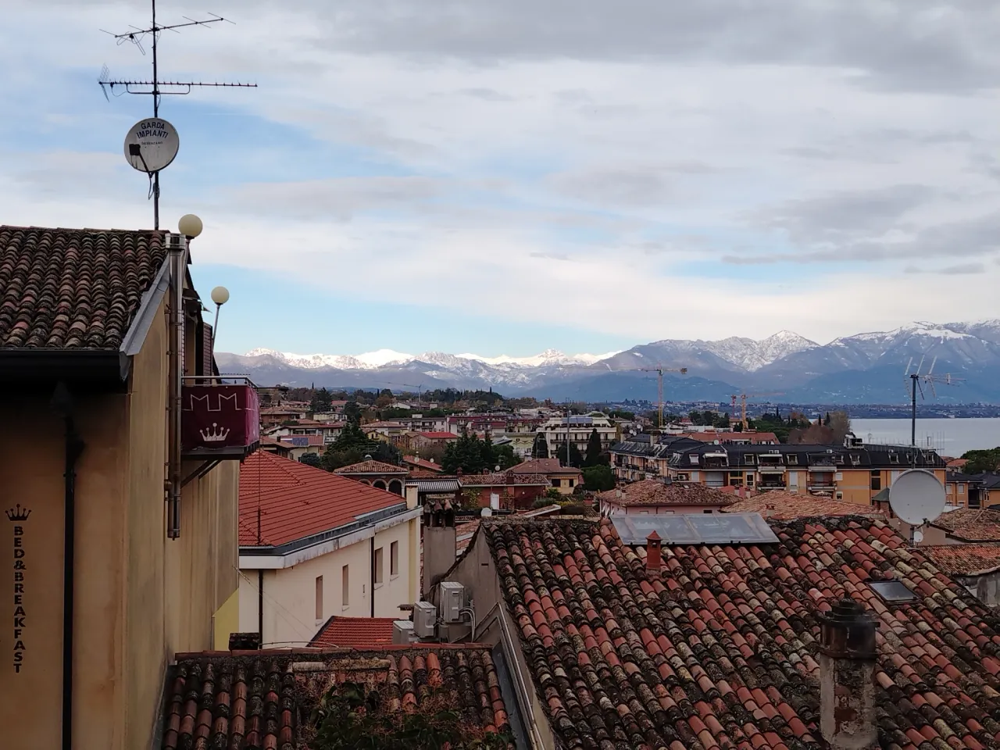
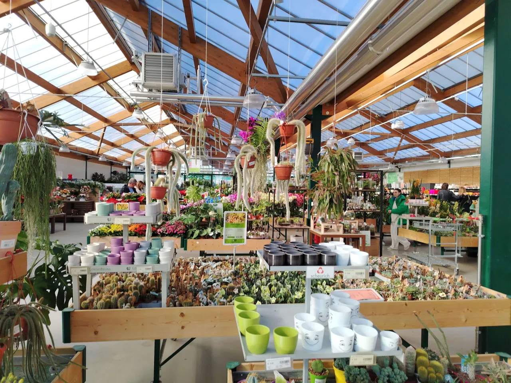

Le repas improvisé
Un kebab pris au hasard
Pour le repas, nous avons mangé un kebab dans un endroit pris au hasard. C’était simple, mais bon, et ça nous a fait du bien après la marche.
Carnet de voyage · Lac de Garde, Italie
Deux jours en famille entre la vieille ville, le lac et les montagnes enneigées.

01 Le contexte
Fin novembre 2025, je suis parti deux jours à Desenzano del Garda, sur la rive sud du lac de Garde, avec ma famille.
Le temps était nuageux, mais agréable pour se promener.
02 La ville
Nous avons commencé par visiter le centre-ville. Desenzano est une jolie petite ville, avec des façades colorées et une grande place pavée.
Nous avons vu plusieurs monuments :

03 La vue

J’ai été surpris de voir de la neige aussi tôt.
04 Le jardin

Le lendemain, nous sommes allés dans un jardin botanique à l’extérieur de la ville. Je ne me souviens plus de son nom. C’est un très grand espace, presque comme un entrepôt, avec un toit vitré et des poutres en bois. Il y avait beaucoup de plantes, des cactus, des orchidées et des pots de toutes les couleurs.
05 À table
Le repas improvisé
Pour le repas, nous avons mangé un kebab dans un endroit pris au hasard. C’était simple, mais bon, et ça nous a fait du bien après la marche.
Le dernier repas
Nous avons terminé le séjour au Sushi Club, à Castel Mella, un restaurant « all you can eat ».
La salle est sombre et moderne, avec de grandes vitres éclairées par des lignes de lumière, à travers lesquelles on voit les cuisiniers. Il y avait beaucoup de choix, et tout était frais et très bon.
06 Épilogue
Ce petit voyage en famille m’a vraiment plu. J’ai été content de découvrir la ville, de voir la vue sur le lac et les montagnes, et de bien manger.
J’aimerais y retourner, peut-être en été.
Desenzano del Garda · novembre 2025